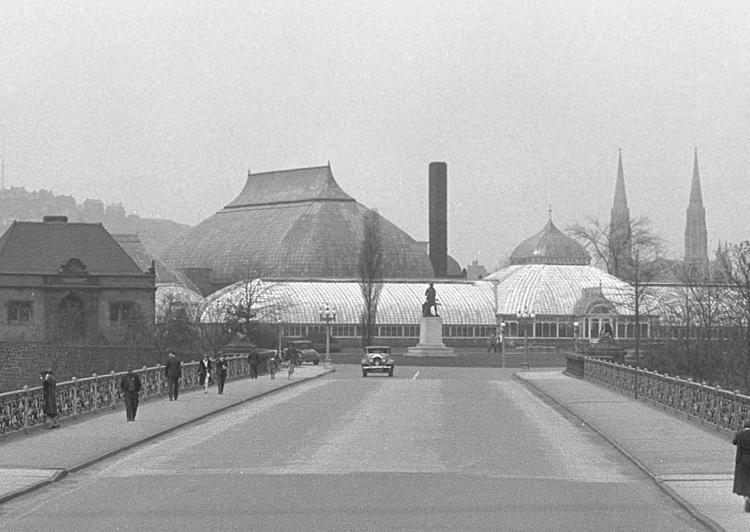

OUR MISSION
To inspire and educate all with the beauty and importance of plants; to advance sustainability and promote human and environmental well-being through action and research; and to celebrate its historic glasshouse. ...Click here to find out more about Phipps Conservatory


Tropical Forest Congo Exhibit
Feb. - April 2015
Phipps Conservatory and Botanical Gardens' Tropical Forest Congo exhibit is the result of years of research on the biodiversity of Africa, where Curator of Horticulture Ben Dunigan and Exhibit Coordinator Jordyn Melino acquired knowledge and inspiration by visiting Cameroon’s most breathtaking natural areas and learning from its indigineous peoples. Open daily, the installation is now part of the guest experience.
The plant life on display in the Tropical Forest Conservatory features many varieties of botancial specimens never before showcased at Phipps. Among the specimens are sausage trees (Kigelia africana) — known for their fragrant red flowers that, when pollinated, form large tubular fruits that can weigh up to 22 pounds — and the Napolean hat plant (Napoleonaea imperialis), which bears passionflower-like blooms on its trunk.
Tropical Forest Congo also incorporates education stations, including a regional food market, a forest dwelling and field research kiosks. Beaded artifacts, such as ceremonial elephant masks, and stones carved by local artist Richard Hower are on view, too.
March Public Programs
Saturdays and Sundays @ 1:30 P.M.
Grow your garden know-how by attending a free-with-admission class!
Join us every Saturday and Sunday at 1:30 p.m.* in the Tropical Forest Conservatory for demonstrations on a wide variety of topics, free with admission! From beekeeping to bonsai and conifer care to compost, local experts bring it all to you surrounded by the beauty of our gardens.
Spring Flower Show
March 14 - April 12
Celebrate the season of renewal and regrowth. After another cold winter, our annual Spring Flower Show is the perfect reward for the senses, and, drawing inspiration from the old adage “April showers bring May flowers,” this year’s exhibit will not disappoint as it celebrates rain and its important role in nature with a bevy of bright blooms.
For the show, each display room features a unique design that will delight and enchant guests of every age with an abundance of color, scents, sights and sounds — from cute rain boots planted with bulbs to motion-activated storm clouds that send drops of rain into ponds below as you walk by. There will be plenty of special botanical surprises, too, including breathtaking Himalayan poppies and ‘Hip Hop Bunny’ violas, along with tulips, hyacinths, daffodils, lilies, primula, snapdragons, foxglove and orchids.
Spring Flower Show, designed by Phipps Exhibit Coordinator Jordyn Melino, runs through April 12. Hours are 9:30 a.m. – 5 p.m. daily and until 10 p.m. on Fridays. Admission is $15 for adults, $14 for seniors and students, and $11 for children (2 – 18). Members and kids under 2 enter free.
ABOUT US
Phipps Conservatory and Botanical Gardens, a great steel and glass Victorian greenhouse, has been inviting visitors to explore the beauty and mysteries of plants since 1893. Set amidst one of Pittsburgh's largest greenspaces, Schenley Park, Phipps Conservatory stands as a cultural and architectural centerpiece of the city's Oakland neighborhood.
In recent decades, Phipps has evolved into one of the region's most vibrant, thriving cultural attractions, bringing fresh perspectives and artists into our historic glasshouse environment. Phipps has also become a strong advocate for advanced green-building practices, sustainable gardening and a new environmental awareness.
Non-Profit Status
Phipps Conservatory is a 501(c)3 tax exempt organization.
HISTORY
Phipps Conservatory and Botanical Gardens is a complex of buildings and grounds set in Schenley Park, Pittsburgh, Pennsylvania, United States (near the Carnegie Museums in Oakland). It is a City of Pittsburgh historic landmark and is listed on the National Register of Historic Places.
The gardens were founded in 1893 by steel and real-estate magnate Henry Phipps as a gift to the City of Pittsburgh. Its purpose is to educate and entertain the people of Pittsburgh with formal gardens (Roman, English, etc.) and various species of exotic plants (palm trees, succulents, bonsai, orchids, etc.). Currently, the facilities house elaborate gardens within the thirteen room conservatory itself and on the adjoining grounds. In addition to its primary flora exhibits, the sophisticated glass and metalwork of the Lord & Burnham conservatory offers an interesting example of Victorian greenhouse architecture.
Phipps is one of the "greenest" facilities in the world. The entrance pavilion of the Phipps Conservatory has silver-level LEED certification. Its Center for Sustainable Landscapes has received a Platinum certification along with fulfilling the Living Building Challenge for net-zero energy, and its greenhouse production facility has received Platinum certification, the first and only greenhouse to be so certified.
EXPANSION AT PHIPPS
In October 2003, Phipps announced an expansion project. The first phase, a green engineered Welcome Center topped by a neo-Victorian dome, was designed by IKM Incorporated, and completed in 2005. The Production Greenhouses and a Tropical Forest Conservatory were completed in 2006.
The Tropical Forest conservatory will have a different theme every two years, beginning with the country of Thailand. In addition to a "Research Forest Station" and a "Healer's Hut" (designed to educate visitors about various cultural topics), there are two waterfalls, several bridges, a stream, and a wide variety of plants from bamboo, orchids and frangipani to plants of economic, cultural, and horticultural value to the people of Thailand. The second theme is "Headwaters of the Amazon," which opened in early 2009.
An example of a Dale Chihuly art glass installation at the Phipps Conservatory in 2007:
The new Tropical Forest Conservatory has several interesting features, which make it extremely energy-efficient (for a glass house.) It has "earth tubes" running underground to help cool the tropical forest and a Solid Oxide fuel cell, which powers this newly constructed part of the building. In addition, there are computer-controlled shades that block excess sun light from entering the structure and also help to insulate it at night.
In 2007, Phipps teamed with glass artist Dale Chihuly and his Tacoma-based team of glass blowers. They worked together to create a marriage of hand-blown glass and living plants. Following the closing of the exhibit in February, the conservatory retained four prominent pieces (the Welcome Center chandelier, the hanging gold star in the Desert Room, the celadon and purple gilded Fiori in the Tropical Fruit and Spice Room and the bronze, apricot and chartreuse Ikebana in the Palm Court) and subsequently purchased 26 smaller pieces for its permanent collection including six multicolored Macchia (wavy, shell-like bowls), thirteen amber Cattails and seven Paintbrushes, all of which are installed in the Palm Court. The total Chihuly collection is valued at $1.2 million.[8]
In 2009, Phipps teamed with another glass artist Hans Godo Frabel to create another stunning exhibit titled "Gardens and Glass." Unlike the Chihuly pieces, Frabel's work is more realistic, although still whimsical at times. Highlights of this exhibit include Longfellows, intricate glass orchid and lotus plants and various clowns (balancing on either glass playing cards or colored glass balls.) This collaboration was on display until January 2010.
MEET THE TEAM
- Richard V. Piacentini, Executive Director
- Gregory R. DuFour, Director, Development Campaign
- Liz Fetchin, Director of Marketing and Communications
- Jane Fahringer, Director of Guest Services
- Dr. Emily A. Kalnicky, Director of Science Education and Research
- Jan Kortz, Director of Human Resources and Operations
- Robert S. Mermelstein, Chief Financial Officer
- Margie Radebaugh, Director of Horticulture and Education
- Jason Wirick, Director of Facilities and Sustainability Management